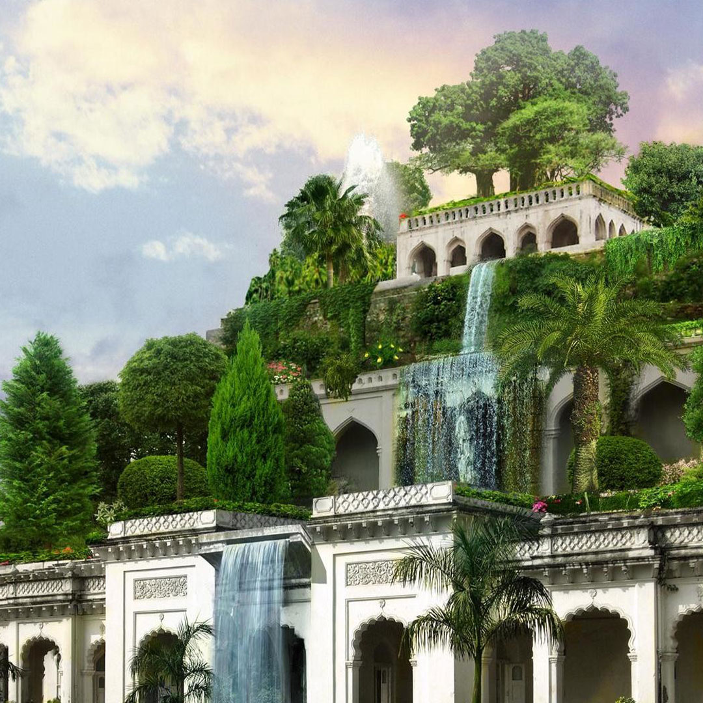
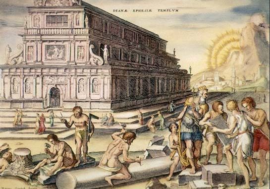
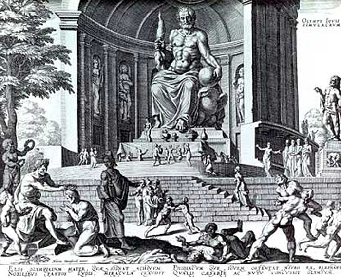
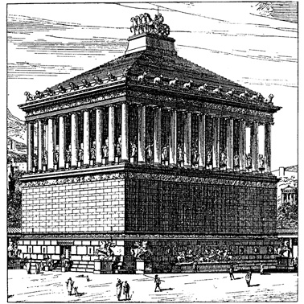
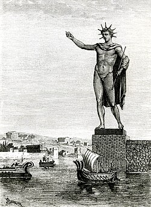
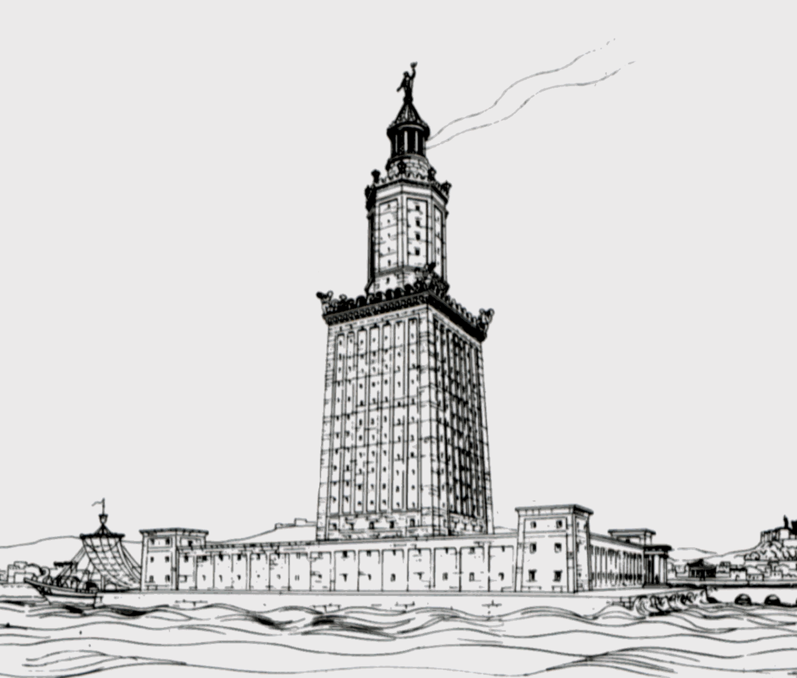

Cheopso piramidė, arba Didžioji Gizos piramidė – Egipto piramidė Gizoje, faraono Cheopso (Chufu) kapas.
Tai didžiausia Senovės Egipto piramidė, pastatyta apie 2570 m. pr. m. e.
Piramidė yra seniausias iš septynių pasaulio stebuklų ir vienintelis, išlikęs iki mūsų dienų.
Senovės Egipto laikais jos vardas buvo „Chufu horizontas“.
Visa struktūra, kurios originalus aukštis buvo apie 146,6 m ir kvadratinio pagrindo kraštinės ilgis 230,33 m, užima ~53 000 kvadratinių metrų plotą, yra pastatyta iš maždaug 2,3 mln. akmens luitų.
Dabartinis piramidės aukštis − 137,38 m, jos išorinės sienos paklotos iš 203 akmenų eilių.
Piramidė pastatyta itin tiksliai: jai paruošto pagrindo aukščio skirtumai neviršija 2,1 cm, o kraštinių ilgio didžiausias skirtumas yra tik 4,4 cm.
Sunkiausi akmenys yra piramidės viduje, faraono Cheopso laidojimo patalpos lubose.
Tai didžiuliai granito blokai, kurie gali sverti 50−80 tonų ir yra skirti išskirstyti piramidės akmenų svorio jėgas virš faraono laidojimo patalpos.
Originaliai piramidė buvo padengta balto kalkakmenio apdailos blokais, kurie nuardyti XIII a. statant dabartinio Kairo namus.
Manoma, kad piramidę statė apie 100 000 žmonių ilgiau kaip 20 metų.
Cheopsas, kaip ir jo pirmtakai, irgi norėjo būti palaidotas piramidėje.
Reikėjo atrasti tinkamą vietą statybai, nes milžiniškas statinys sveria 6 400 000 tonų, taigi jo pagrindas turėjo būti itin tvirtas.
Tinkama vieta rasta į pietvakarius nuo dabartinės Egipto sostinės Kairo, dykumos plynaukštėje, už septynių kilometrų į vakarus nuo Gizos.
Ten tvirtas uolėtas pagrindas galėjo išlaikyti piramidės svorį.
Parengiamuosiuose darbuose, kurie vyko apie dešimtį metų, dirbo apie 4000 žmonių – menininkai ir architektai, akmenskaldžiai ir įvairūs amatininkai.
Kabantieji Babilono sodai

Kabantieji Babilono sodai
Kabantieji Babilono sodai (arba Semiramidės sodai) – sodų kompleksas, pastatytas senovės mieste Babilone, Eufrato pakrantėje.
Manoma, kad šie sodai sukurti apie 600 m. pr. m. e.
Pasak senovės graikų legendos, sodai buvo sukurti, nes karaliaus Nabuchodonosaro II žmona Amytis ilgėjosi savo gimtųjų namų Medijoje.
Karalius negalėjo žiūrėti į liūdinčią žmoną ir nusprendė ją nudžiuginti didžiuliais sodais, priminsiančiais jai namus ir kad ji pasijustų it miškais apaugusiuose gimtinės kalnuose.
Nelabai aišku kodėl kabantieji sodai vadinti ir Semiramidės, keliais amžiais anksčiau valdžiusios Asirijos karalienės vardu.
Kabantys sodai turėjo būti prie upės, kad lengviau būtų juos drėkinti.
Sodai buvo sukurti viena virš kitos buvusiose terasose, galėjusiose siekti 40 m aukštį.
Visas statinys turėjo piramidės formą, nes aukščiau esančios terasos buvo mažesnės už žemiau esančias.
Terasos buvo išklotos akmens luitais, užlietais švinu.
Kiekviena terasa laikėsi ant stambių suremtų akmeninių gegnių, kurios sudarė kolonadą.
Statinio pagrinde buvo didelis ketvirtainis pamatas.
Į kiekvieną terasą suvežta tiek žemės, kad jose galėjo įsišaknyti ir dideli medžiai.
Artemidės šventykla

Artemidės šventykla
Artemidės šventykla – vienas iš septynių pasaulio stebuklų, stovėjusių Efese (dabartinė Turkija).
Pagal legendą Efesą įkūrė amazonės – karingų moterų gentis.
Paskutinė Artemidės šventykla jame buvo statoma daug kartų.
Ankstyvieji mediniai statiniai pasenę suirdavo, sudegdavo arba sugriūdavo per žemės drebėjimus, todėl VI a. pr. m. e. viduryje buvo nutarta globėjai deivei Artemidei pastatyti didingą buveinę, negailint nei lėšų, nei laiko.
Geriausiu buvo pripažintas Chersitrono projektas.
Jis pasiūlė šventyklą statyti iš marmuro, pelkėje prie upės.
Chersitronas nutarė, kad minkšta pelkėta dirva bus geras amortizatorius per žemės drebėjimus.
O kad savo svorio slegiamas marmurinis kolosas nenugrimztų į žemę, buvo iškasta gili pamatų duobė ir pripildyta medžio anglies bei vilnos mišinio - padaryta kelių metrų storio pagalvė.
Šventyklos statyba buvo labai sudėtinga, ir kada didysis architektas būdavo bejėgis, jam į pagalbą ateidavo pati Artemidė… Cheristonas nesulaukė statybos pabaigos.
Šventykla buvo baigta apie 550 m. pr. m. e.
Nežinoma, kaip ji buvo papuošta, kokios statulos joje stovėjo, kokios buvo freskos ir kokie paveikslai, kaip atrodė pati Artemidės statula.
Visa, ką buvo padaręs Chersitronas ir jo įpėdiniai, sunaikino Herostratas.
Eilinis žmogus nutarė tapti nemirtingas, atlikdamas nusikaltimą - 356 m. pr. m. e. liepos 21 d. sudegindamas Artemidės šventyklą.
Svarbiausią statinį rėmė 127 marmuro kolonų, kurių aukštis siekė 20 metrų.
Pastatas dekoruotas gražiomis skulptūromis ir kitais papuošimais.
Šventyklos viduryje pastatyta Artemidės skulptūra.
Tai viena didžiausių senovės šventyklų - jos pagrindas buvo 109 m ilgio ir 50 m pločio.
Artemidės šventykla pastatyta apie 550 m. pr. m. e. (Achemenidų dinastija).
Iš vidaus šventyklą puošė nuostabios Praksitelio ir Skopo statulos, bet dar puikesni buvo paveikslai.
Dzeuso skulptūra

Dzeuso skulptūra
Dzeuso skulptūra Olimpijoje buvo vienas iš Septynių pasaulio stebuklų.
Olimpija Senovės Graikijoje buvo svarbus religinis centras, kuriame daugiausiai garbinamas dievas buvo Dzeusas.
Šiame mieste buvo rengiamos ir olimpinės žaidynės, šventės ir atletikos varžybos.
V a. pr. m. e. Olimpijos gyventojai Dzeuso garbei nusprendė pastatyti šventyklą, kuri iškilo 466–456 m. pr. m. e.
Ji buvo pastatyta iš masyvių akmens luitų ir supama kolonų.
Šventykla neturėjo dievo skulptūros, todėl jai sukurti buvo išrinktas Fidijas (Feidijas), žinomas Atėnų skulptorius.
Anksčiau jis buvo sukūręs dvi Atėnės statulas.
Dzeuso statula stovėjo šventykloje, kurios ilgis siekė šešiasdešimt keturis metrus, plotis - dvidešimt aštuonis, vidinė patalpa buvo dvidešimt metrų auksčio.
Skulptūra buvo pabaigta apie 435 m. pr. m. e.
Vėliau Bizantijos imperatoriai labai atsargiai pervežė statulą į Konstantinopolį.
V m. e. a. imperatoriaus Teodosijaus II rūmai sudegė.
Ugnis prarijo medinį kolosą: tik keletas suanglėjusių kaulo plokštelių ir išsilydžiusio aukso gabalėliai liko iš Fidijo kūrinio.
Halikarnaso mauzoliejus

Halikarnaso mauzoliejus
Halikarnaso mauzoliejus – vienas iš septynių pasaulio stebuklų, stovėjęs Mažojoje Azijoje, Halikarnaso mieste (dabar Bodrumas).
Mauzoliejų Persų imperijos Karijos provincijos satrapui Mauzolui (valdė 377–353 m. pr. m. e.) po mirties pastatydino jo žmona ir sesuo Artemisija.
Statyba buvo baigta 351 m. pr. m. e.
Pati Artemisija nesulaukė statybos pabaigos ir mirė vieneriais metais anksčiau.
Artemisijos pelenai buvo palaidoti Mauzoliejuje greta Mauzolo.
Graikų architektai Satyras ir Pitijas suprojektavo apie 45 m aukščio statinį, kurį sudarė trys pagrindiniai elementai – platforma, antkapis ir stogas.
Mauzoliejų pastatė kalvos viršūnėje.
Iš pradžių buvo pastatyta didelė platforma, į kurios viršų vedė laiptai, išpuošti akmeniniais liūtais.
Platformą supo dievų ir deivių, raitų karių skulptūros – graikų skulptorių Briakso, Leocharo, Skopo ir Timočio darbai.
Ant platformos stūksojo pats kvadratinio plano antkapis, pastatytas daugiausiai iš marmuro.
Šią statinio dalį puošė reljefai, vaizduojantys graikų mitologijos ir istorijos scenas.
Piramidinį stogą puošė kvadriga: keturi žirgai tempia kovos vežimą, kurį valdo Mauzolas ir Artemisija.
1852 metais Mauzoliejaus vietą aptiko ir kasinėjo britų archeologas Charles Thomas Newton.
Jis aptiko sienų likučius, laiptus, tris pastato platformos kampus, iškasė bareljefų ir stogo fragmentų bei rado vieną vežimo, puošusio Mauzoliejaus stogą, ratą (maždaug dviejų metrų skersmens), galop aptiko Mauzolo ir Artemisijos skulptūras.
1966-1977 m. Mauzoliejų nuodugniai tyrinėjo danų archeologas Kristian Jeppesen iš Arhu universiteto.
Jis publikavo šešių tomų veikalą „The Maussolleion at Halikarnassos“.
Rodo kolosas

Rodo kolosas
Rodo kolosas – milžiniška graikų Saulės dievo Helijo skulptūra, stovėjusi Rodo saloje III a. pr. m. e., vienas iš septynių pasaulio stebuklų.
Amžininkai rašė, kad vidinę figūros konstrukciją sudarė iš akmens blokų pastatyti bokštai, stovintys ant 15 metrų aukščio marmurinio postamento.
Į akmens blokus buvo įkalti geležies strypai, o prie jų tvirtinamos bronzos plokštės, formuojančios skulptūros paviršių.
Statyboje buvo naudojami taip pat ir perlydyti Demetrijo kariuomenės palikti metaliniai ginklai, ir apgulties bokštų konstrukcijos.
Teigiama, kad iš viso buvę sunaudota 500 talentų bronzos ir 300 talentų geležies (atitinkamai maždaug 13 ir 8 tonos).
Viršutinei koloso daliai statyti buvo supiltas didelis grunto pylimas, kurį vėliau nukasė.
Helijas buvo pavaizduotas kaip jaunuolis su vainiku, bet autentiška koloso išvaizda nežinoma.
Šaltiniuose nurodomos dvi koloso vietos – uosto vartai ir uosto bangolaužis, bet dabartiniai tyrinėjimai pirmąjį variantą atmeta.
Darbas buvo baigtas per 12 metų – 282 m. pr. m. e.
Statula išstovėjo tik 56 metus, iki 226 m. pr. m. e. (data gali būti netiksli), kai ją sugriovė žemės drebėjimas.
Silpniausioji vieta pasirodė besą keliai.
Ptolemėjas III pasiūlė lėšų koloso atstatymui, bet orakulo pranašystė buvo nepalanki šiam sumanymui, tad atstatymo buvo atsisakyta.
Liekanos pragulėjo virš 800 metų.
Plinijus vyresnysis rašo, kad ne kiekvienas vyras sugebėdavęs apglėbti skulptūros pirštą.
654 m. arabai užėmė Rodą ir, kronikininko Teofano liudijimu, skulptūros metalas buvo parduotas pirkliui iš Edesos.
Visas pirkinys buvęs sukrautas ant 900 kupranugarių.
Aleksandrijos švyturys

Aleksandrijos švyturys
Aleksandrijos švyturys pastatytas III a. pr. m. e., valdant Ptolemėjui II (280–247 m. pr. m. e.), vienas iš septynių pasaulio stebuklų.
Šis žinomiausias pasaulio švyturys prastovėjo apie 1500 metų, kol jį galutinai sugriovė žemės drebėjimas.
Švyturio paskirtis – padėti orientuotis laivams, plaukiantiems į Aleksandrijos uostą – nulėmė ir statybos vietą – nedidelę Faro salelę netoli Aleksandrijos (Egiptas).
Statyba truko apie 20 metų ir buvo baigta 283 m. pr. m. e.
Kuras švyturiui buvo užvežamas mulų arba arklių traukiamais vežimais spiraliniu pandusu.
Šviesai atmušti jūros kryptimi buvo pritaikyti dideli bronziniai veidrodžiai, todėl jūreiviai Aleksandrijos švyturio šviesą naktimis matydavo už 50 km.
Legenda pasakoja, kad šis veidrodis taip pat buvo naudojamas priešų laivams susekti ir sudeginti, kol jie dar nepasiekė kranto.
Nuo IV iki XV a. švyturį ne kartą apgriovė žemės drebėjimai, ypač 1303 ir 1323 m. 1349 m. arabų keliautojas Ibn Battuta aplankė švyturį ir konstatavo, kad šis visiškai sugriuvęs,
o dar po 100 metų sultonas Ašrafas Quaitbay toje vietoje pastatė fortą, kurio statybai buvo panaudotos ir kai kurios švyturio dalys.